NANOCATS 第一个 CATBOTICA NFT 系列包含来自 Neilos 星球的 12,000 个 Catbots，现在驻留在以太坊区块链上。Nanocats [ NV1s / NV2s ]分为两个发布阶段和品种，将允许用户创建
Nanoverse HQ Official 社区Nanoverse nanopass.io 于 2021 年 10 月加入 … NANOVERSE HQ转推 … Nanoverse x Meta Kongz之间的官方合作伙伴关系..NANOPASSES 是一种早期访问通行证，可兼
NAOM_OFFICIAL aom项目的意义在单写者难以生存的 NFT 市场，10 位单写者一个旨在支持和共同成长的社区 1.开启联合收藏- 10 位作者各种内容 NFT 出版物 ex) Relay webtoo
National Beer Day 2022 获奖艺术家 Jason Naylor 和 Anheuser-Busch 之间的特别合作，庆祝 2022 年全国啤酒日。干杯！负责任地享受。© 2022 Anheuser-Busch, Budweiser® Lager Beer, St. Louis, MO。国际啤酒日是全球啤酒庆祝活
National Beer Day 2022 - Cheers 绍我们的第一个 NFT 产品 - Bud Light N3XT 系列。该系列由 12,722 个生成代币组成，用于庆祝创新、社区和下一代创作者。每个 NFT 都结合了两部分背景和一个代表啤酒、文化、
National Beer Day 2022 - Journey 你被邀请到这个新领域，你的 NFT 可以解锁独家福利、奖励等等。凭借我们丰富的传统、无可争议的影响力和卓越的品味，我们有很多值得期待的地方。因此，打
NFT2Metaverse NFT2Metaverse 的 NFT。独特的数字艺术收藏，具有独家优惠和持有者奖励。NFT2Metaverse 将成为 Metaverse 的市场。通过使用我们高效且易于使用的平台即服务 (
NFTY DASH PREMIUM NFT 空间可能是压倒性的，但机会如此之多——只要你的所有数据都在一个地方。 该领域的许多人使用冗长而凌乱的 Excel 电子表格来跟踪他们的 NFT 投资组合。 这会导
NGMIFELLAS ▶ 什么是 NGMIFELLAS？ NGMIFELLAS 是一个 NFT（不可替代代币）集合。 存储在区块链上的数字艺术品集合。 ▶ 有多少个 NGMIFELLAS 代币？ 总共有 1,000 个 NGMIFELLAS NFT。 目前
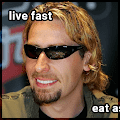 NickelbackDAO ▶ 什么是 NickelbackDAO？ NickelbackDAO 是一个 NFT（Non-fungible token）集合。 存储在区块链上的数字艺术品集合。 ▶ 有多少 NickelbackDAO 代币
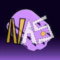 Nifty All-Star Guns 什么是漂亮的全明星枪？ Nifty All-Star Guns 是一个 NFT（不可替代代币）系列。 存储在区块链上的数字艺术品集合。 ▶ 有多少 Nifty All-Star Guns 代币？ 总共有 1 个 Nifty All-Star Guns NFT。 目
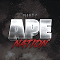 Nifty Ape Nation ▶ 什么是 Nifty Ape Nation？ Nifty Ape Nation 是一个 NFT（不可替代令牌）集合。 存储在区块链上的数字艺术品集合。 ▶ 有多少 Nifty Ape Nation 代币？ 总共有 472 个 Nifty Ape Nation NFT
Nifty DJs Official 他们野蛮、有竞争力，他们将争夺官方 Top100 Metaverse DJ 的第一名，通过 Electro Dance Music 的声音为 NFT 空间注入活力。在以太坊区块链上发现了 20 个神秘的控制台。 他们似乎播放了 20
Nifty Royale X Jonathan Winbush Sewer Shark 搜集艺术家原创作品的限量版将作为基础 NFT 铸造，并在每个 Drop 的初始销售期间以固定价格出售。 购买的 NFT 将进入大逃杀进行相应的掉落。 NFT会被一个一个随
Nifty Royale X Lushsux ONE DOES NOT SIMPLY SELL AN NFT Nifty Royale 是一个全球网络，成员来自世界各地。 加入我们社交网络上的讨论，了解最新消息和公告。艺术家原创作品的限量版将作为基础 NFT 铸造，并在每个 Drop 的初始
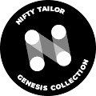 Nifty Tailor Genesis Nifty Tailor Genesis 是第一个为您的 Ape/Mutant 量身定制的系列。 所有定制铸币厂都链接到其原始的 BAYC 或 MAYC NFT 并且可在链上验证。 建立您自己的社区，创建您的品牌，并在二级市场上
NiftyPins ▶ 什么是 NiftyPins ERC-1155 Collection V2？ NiftyPins ERC-1155 Collection V2 是一个 NFT（Non-fungible token）集合。 存储在区块链上的数字艺术品集合。 ▶ 存在多少 NiftyPins ERC-1155 Collection V2 代币？
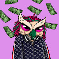 Night Owls Judge Club ▶ 什么是夜猫子裁判俱乐部？ Night Owls Judge Club 是一个 NFT（非同质代币）集合。 存储在区块链上的数字艺术品集合。 ▶ 夜猫子裁判俱乐部代币有多少？ 总共有 8,804 个 Night
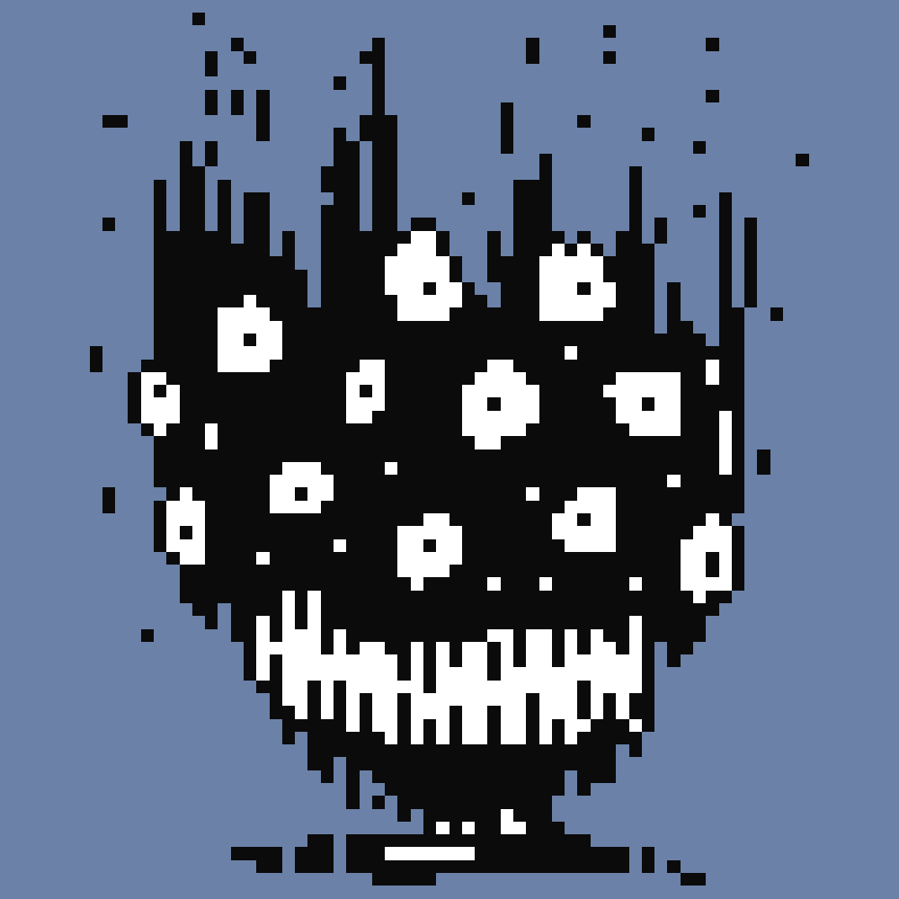 nightcuriosities.xyz ▶ 什么是 nightcuriosities.xyz？ nightcuriosities.xyz 是一个 NFT（不可替代令牌）集合。 存储在区块链上的数字艺术品集合。 ▶ 有多少个 nightcuriosities.xyz 代币？ 总共
Nightmare On ETH Street ETH Street 上的噩梦是 6969 个手绘恐怖传说的合集，区块链上的永恒不死族。万圣节是噩梦最强大的时候，我们的每一个生物都出现在一个可怜的人类灵魂的真实噩梦中
NightmaresByHan ▶ 什么是 NightmaresByHan？ NightmaresByHan 是一个 NFT（非同质代币）集合。 存储在区块链上的数字艺术品集合。 ▶ 存在多少个 NightmaresByHan 代币？ 总共有 1,111 个 NightmaresByHan N
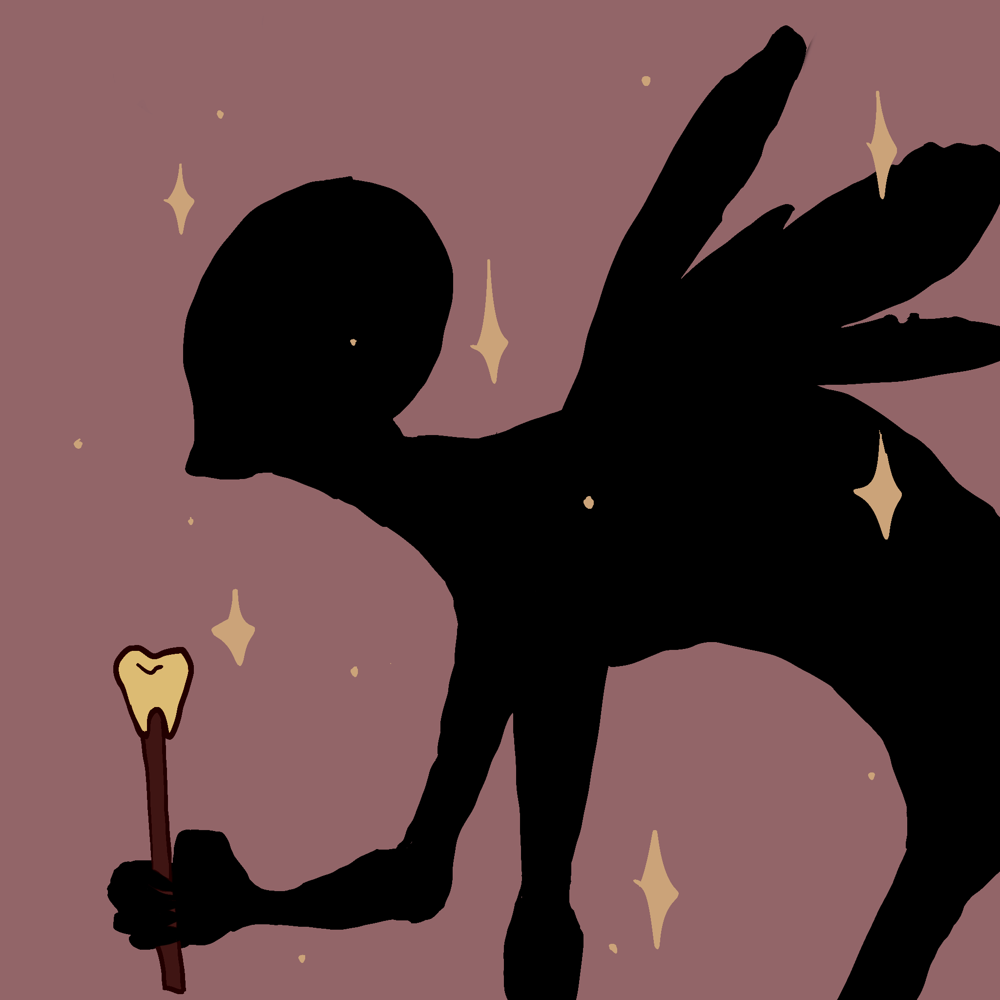 nightmaries.wtf ▶ 什么是 nightmaries.wtf？ nightmaries.wtf 是一个 NFT（不可替代令牌）集合。 存储在区块链上的数字艺术品集合。 ▶ 存在多少个 nightmaries.wtf 代币？ 总共有 3,333 个 nightmaries.wtf
Nights with Nara ▶ 什么是奈良之夜？ Nights with Nara 是一个 NFT（不可替代代币）系列。 存储在区块链上的数字艺术品集合。 ▶ 有多少个 Nara 代币之夜？ 奈良 NFT 总共有 10,000 晚。 目前，58
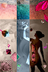 Niines-Verse ▶ 什么是 Niines-Verse？ Niines-Verse 是一个 NFT（不可替代令牌）集合。 存储在区块链上的数字艺术品集合。 ▶ 存在多少 Niines-Verse 代币？ 总共有 3 个 Niines-Verse NFT。
NIJIRI ▶ 什么是NIJIRI？ NIJIRI 是一个 NFT（不可替代代币）集合。 存储在区块链上的数字艺术品集合。 ▶ NIJIRI 代币有多少？ 总共有 15 个 NIJIRI NFT。 目前 3 位所有者
Nike Bored Ape Yacht Club 您的 Bored Ape 可兼作您的 Yacht Club 会员卡，并授予会员专属福利，其中第一个是使用协作涂鸦板 THE BATHROOM。 社区可以通过激活路线图来解锁未来的领域和福利
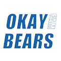 Okay Bears Family 10 分钟内售罄！10,000 个独特 NFT 的干净集合。100% 手绘的 OKBF 各种服装和配饰的收藏品。Okay Bears Family NFT - 常见问题（FAQ） ▶ 什么是 Okay Bears 家庭？ Okay
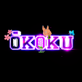 OKOKU OFFICIAL ŌKOKU 是一个完全去中心化的项目，致力于打造 NFT 领域最满意的社区。艺术是完全手绘的，有 4 个不同的角色和 331 个总特征。我们的系列将日本人的性格发
Old Ape Country Club Official 一个由 5000 只老年猿组成的专属俱乐部，他们在年轻时模仿 NFT 和 Crypto 后，正在享受他们的后半生。每个 Old Ape 都是独一无二的，并通过各种可能的特征以编程方式生成
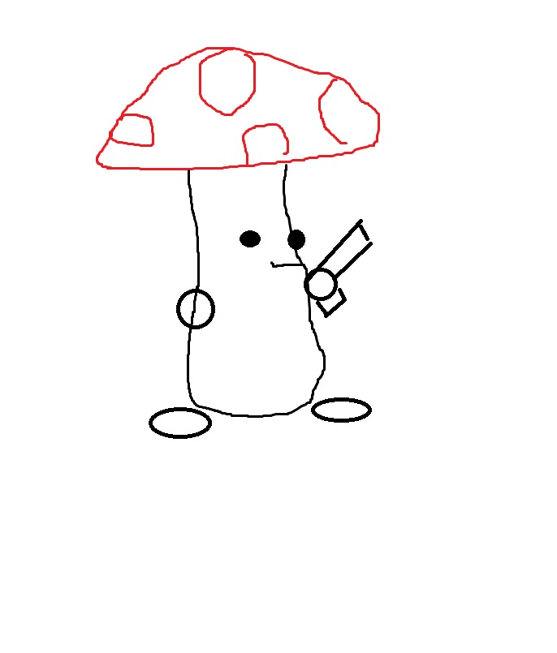 oldcollms 不要薄荷测试集合oldcollms NFT - 常见问题（FAQ） ▶ 什么是 oldcollms？ oldcollms 是一个标志性的 NFT（不可替代）在存储链上的收藏品集合
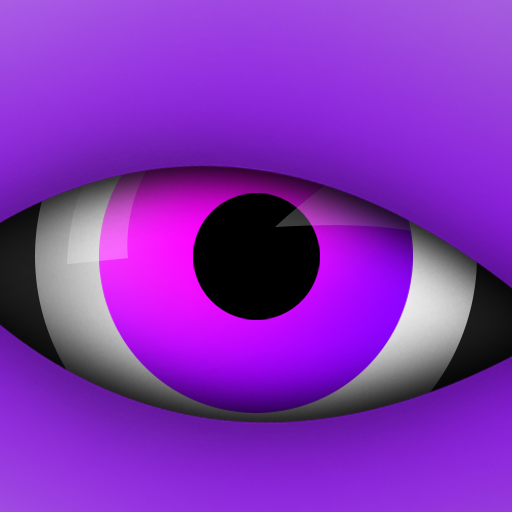 Olhos Lindos Olhos Lindos NFT - 问题常见（FAQ）美丽的眼睛 - 薄荷测试 ▶ 什么是 Olhos Lindos？ Olhos Lindos 是一个 NFT（不可替代令牌）集合。存储在区块链上的数字收藏品集合。
Olympus Lands 有时你必须退后一步才能看到更大的图景Olympus Lands NFT - 常见问题（FAQ） ▶ 什么是奥林巴斯大陆？ Olympus Lands 是一个 NFT（非同质代币）集合。存储在区
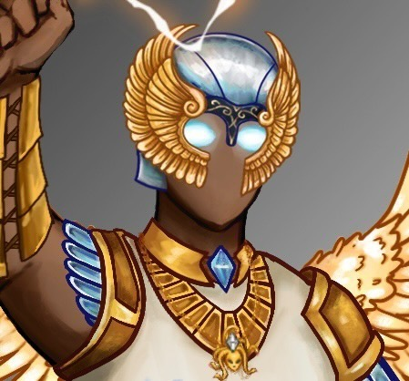 Olympus_NFT 6000 个半神变成了 NFT 退化。拥有 NFT 可以访问我们的 ShitGreek Alpha Group。免费薄荷，这样你就可以损失更多的钱。糟糕的艺术，糟糕的阿尔法。Olympus Gods NFT NFT
OMBO Omnichain 最丰富多彩的角色 OMBOOMBO NFT - 常见问题（FAQ） ▶ 什么是 OMBO？ OMBO 是 NFT（替代代币）集合。存储在区块链上的数字收藏品不可收藏。 ▶ 存在多少个OM


 是一个由 10 位 NFT 艺术家创建的社区。")